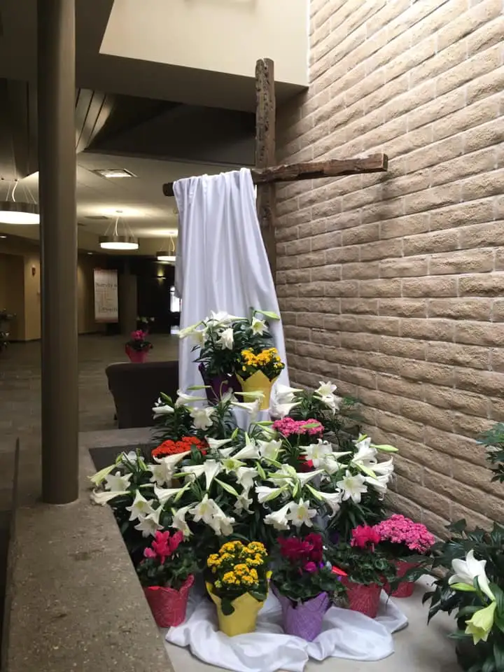
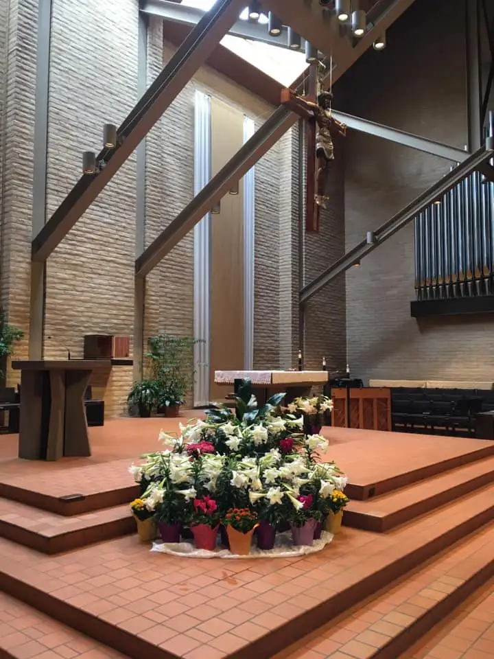

FARGO — The pausing of church services has left many Christians, “the Easter people,” feeling deprived of their church year’s climactic moment.
Some might even feel as if Easter, like so many public events lately, has been canceled. But most won’t be robbed of celebrating Easter joy, the Resurrection of Christ.
“We’re living in the suffering of Christ without being able to celebrate together the Resurrection that’s meant to follow,” says the Rev. Kurt Gunwall of Sts. Peter and Paul Catholic Church in Mantador, N.D. “How will we live out that joy?”
Pat Callens, who works in art and environment at Fargo’s Nativity Church, had already placed the order for Easter flowers — particularly flamboyant and fragrant this time of year — when Bishop John Folda declared Masses temporarily suspended. Confirming the order with the florist, she later second-guessed herself.
“I wondered, was that the right thing to do?” she says. “It would be really sad, not having the lilies and kalanchoes and cyclamen. That’s just Easter.”

Her pastor, the Rev. Bill Gerlach, agreed not to cancel the order, to adorn the chapel where daily and private Masses continue, and the main sanctuary, where people still visit sporadically.

“It will help give some normalcy to those who stop in to see that,” Callens says.
She’ll miss singing for Easter services with her music ministry group this year, she admits, but will watch on television at home, and, at the suggestion of a friend, box up some Easter dinner for her son and wife in north Fargo.

‘Make Easter for people’
Fellow parishioners Joe and Bev Miranowski draw on memories from past family celebrations, including last year’s surprise at the home of their daughter, Jeanette Burke, and her husband, Troy, in Blaine, Minn.
As the adults visited, Bev shares, their grandkids, Julia and Joshua, then 12 and 9, disappeared outside with sidewalk chalk from their Easter baskets. Joe found them sitting on the driveway, surrounded by handmade, colorful art and words of the Resurrection.
“They said, ‘We’re evangelizing,’” Joe continues. “It blew me away. It was just like a little tap from God, you know, that you’re doing something right.”

But Easter is as much a time to look forward, Joe says.
“The virus is a huge concern, but you can’t go living your life in total fear. One of the first phrases Pope John Paul II said was, ‘Do not be afraid,’ and that’s so important.”
Observing nature can help maintain the right perspective, he adds, noting that he loves watching the sunset. “It’s my time with Jesus, enjoying what he wants to give us.”
Sarah Fisher will celebrate Easter for only the second year without her oldest son, Cameron Bolton, who died in June 2018 in a car accident. She finds joy in rainbows, she says, and in embracing Genesis 9:13-16, which speaks of God’s covenant with his people.
“The rainbow provides the hope… that no matter what situation we’re in, God promises to never leave us,” she says, reminding that Jesus’ own mother, Mary, experienced pain as she watched her son die a horrible death, but the Resurrection followed.

“You have to look for the positive in everything, because if you don’t, that’s Satan’s way of destroying you,” Fisher continues. “Hopefully, we’ll look back on this time, and think, ‘I had more time to spend with my kids than I ever got before.'”
She suggests finding ways to “make Easter for people,” perhaps by bringing food to a shut-in neighbor with a cross attached or sending a card through the mail with a Bible verse. “God drops miracles right in our lap, and if we’re looking for them, we will see them.”
‘Heal us’
Dennis Kooren, parishioner and choir member at Holy Spirit Church in Fargo, will be spending Easter with his wife, Karen, at their lake home. Like many, he gropes for hope.
“People on ventilators respond with more oxygen produced when they hear family speak to them, even by phone,” Kooren shares. “Is this not the healing power of Christ’s love — what Easter is about? May this Easter help heal us as a human race.”
Kooren says Easter should lead us to “new life risen from the ashes, a chance for us to benefit from our time of great trial and finally see the goodness in others and the earth,” to “put the false God of Mammon back in its place and replace it with the Risen Christ.”
Borrowing from a friend, Fauzia Haider, he shares, “I think that when the dust settles, we will realize how very little we need, how much we have, and the true value of human connection.”
Aida Laughlin, from Bethel Church in Fargo, says grandchildren are “one of the joys God gives us to make us laugh.” Recently, while caring for two of her grandkids, ages 5 and 6, they were washing their hands, singing “Happy Birthday” like their mom taught them to extend their washing.
“Somehow, though, they got confused and began singing, ‘Happy birthday to the virus, happy birthday to corona, happy birthday to the virus, now leave us alone-a,’” she shares.
Laughlin says this year’s Lenten season has been “telling the Gospel story” in a vivid way.
“I looked out today and finally saw robins madly building nests. God’s earth — so perfect at first — but now marred by virus and violence and broken relationships,” she says.
Christ’s death and resurrection “can be the beginning of the resurrection and restoration process in our lives,” she adds. “Which means, among other things, the restoration of relationships, which are often haphazardly sacrificed to time.”
Laughlin also has found joy in reconnecting with friends, like a refugee family from Colombia she hadn’t talked to in a while, and, through texting, “we pray for each other and speak to our God about our needs and fears.” Joy will come on Easter, she insists.
“On Easter Day, millions of people will be rejoicing, no matter their circumstances, and I will join with them in celebrating the Resurrection of our Lord,” she says. “I especially have been thinking of fellow believers in China and in other countries, like Iran, who have been separated because of the pandemic and because of their beliefs. We will all be rejoicing together!”
[For the sake of having a repository for my newspaper columns and articles, I reprint them here, with permission, a week after their run date. The preceding ran in The Forum newspaper on April 12, 2020; the two photos with Easter lilies were added later for Peace Garden Passage to reflect the church on Easter Sunday.]